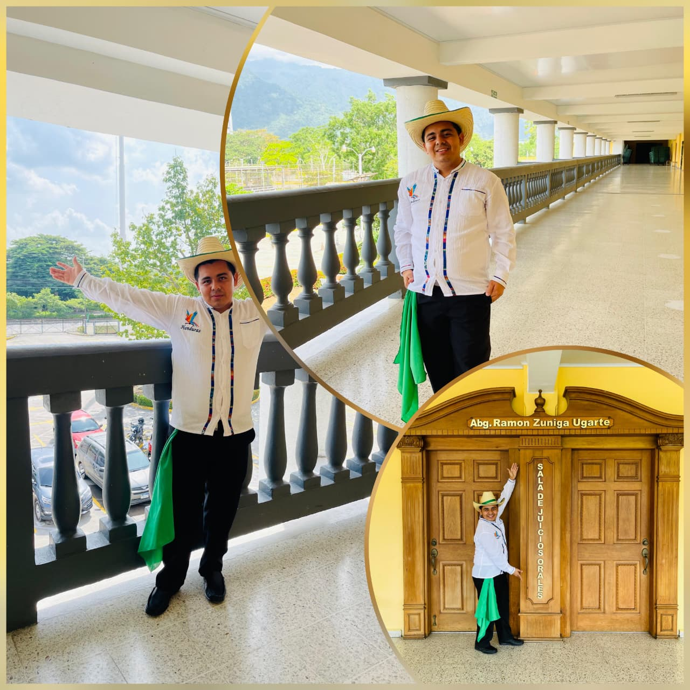
Josué Exequiel Vigil Paz
26 años · Bailarín
Ingeniería en Sistemas
“Vea asu vieja compadre”
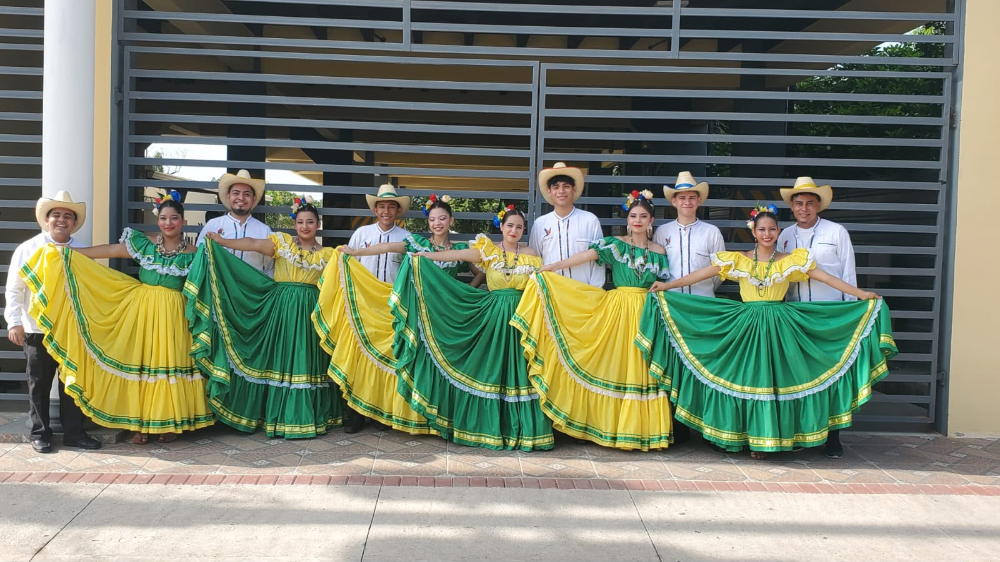
UTH Villanueva · Cuadro de danza
Desde el 20 de junio de 2025 · Villanueva, Honduras
Senderos del Folklore nace el 20 de junio de 2025, por iniciativa de la MSc. Nancy Mencias, fundadora y directora del cuadro, y gracias a la pasión y entusiasmo de un grupo de estudiantes universitarios de la UTH Campus Villanueva, unidos por el deseo de conocer, valorar, preservar y representar las riquezas culturales de Honduras a través de la danza folklórica.
Desde sus inicios, Senderos del Folklore surge como un espacio de formación artística y cultural, donde el talento, la disciplina, la dedicación y el amor por nuestras raíces se convierten en el motor para mantener viva nuestra identidad nacional. Cada uno de sus integrantes encuentra en la danza una oportunidad para aprender, crecer, descubrir sus capacidades y compartir con orgullo la riqueza de nuestro patrimonio cultural.
A través de sus presentaciones, el cuadro ha buscado llevar a diferentes escenarios y comunidades un pedacito de Honduras, representando nuestras tradiciones mediante la música, los movimientos, los vestuarios y las expresiones propias de nuestra cultura.
Más que un cuadro de danza, Senderos del Folklore representa un camino de identidad, tradición y orgullo nacional, construido por estudiantes universitarios que creen en el valor de nuestras raíces y en la importancia de transmitirlas a las nuevas generaciones.
Cada presentación representa el esfuerzo, la disciplina y el compromiso de jóvenes que han decidido convertir su talento en una forma de honrar a Honduras. Porque detrás de cada movimiento existe una historia; detrás de cada melodía, una tradición; y detrás de cada bailarín, el orgullo de representar nuestra tierra.
Porque cada paso cuenta una historia, cada danza preserva una tradición y cada presentación nos recuerda quiénes somos.
Senderos del Folklore
Bailando nuestras raíces, preservando nuestra identidad.
Un año de historia en imágenes: revive con nosotros los momentos más memorables del grupo, desde su debut hasta la actualidad.
Promover, preservar y difundir el folklore y la identidad cultural de Honduras a través de la danza, formando estudiantes universitarios comprometidos con nuestras raíces, mediante el desarrollo del talento, la disciplina, el trabajo en equipo y el respeto por nuestras tradiciones. Buscamos representar con orgullo la riqueza cultural hondureña en diferentes escenarios, fortaleciendo en cada integrante el sentido de pertenencia y orgullo por nuestra nación.
Ser un cuadro de danza folklórica universitario reconocido a nivel nacional e internacional por su calidad artística, disciplina, identidad y compromiso con la preservación de la cultura hondureña, convirtiéndose en un referente de formación y proyección cultural para las nuevas generaciones y llevando, a través de cada presentación, el nombre de Honduras con orgullo y excelencia.
Fundadora y directora: MSc. Nancy Mencias — Rectora UTH Villanueva

26 años · Bailarín
Ingeniería en Sistemas
“Vea asu vieja compadre”
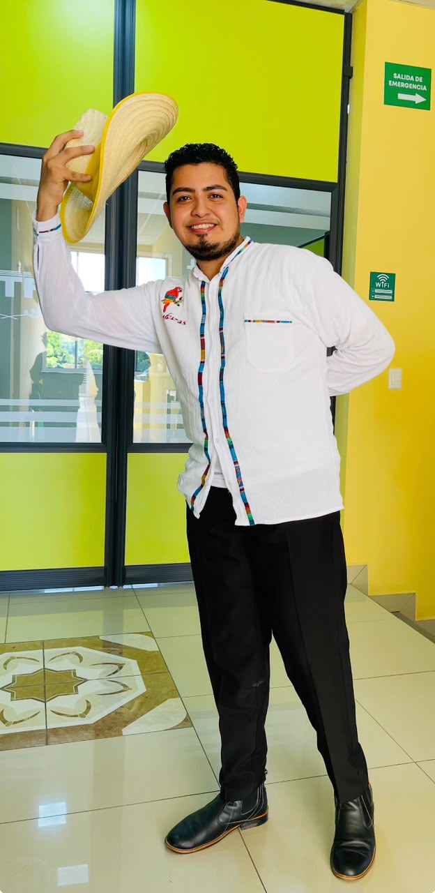
25 años · Bailarín
Lic. en Gerencia de Negocios · UTH
“Te quiero más que a mis ojos, pero más a mis ojos porque con ellos te veo”
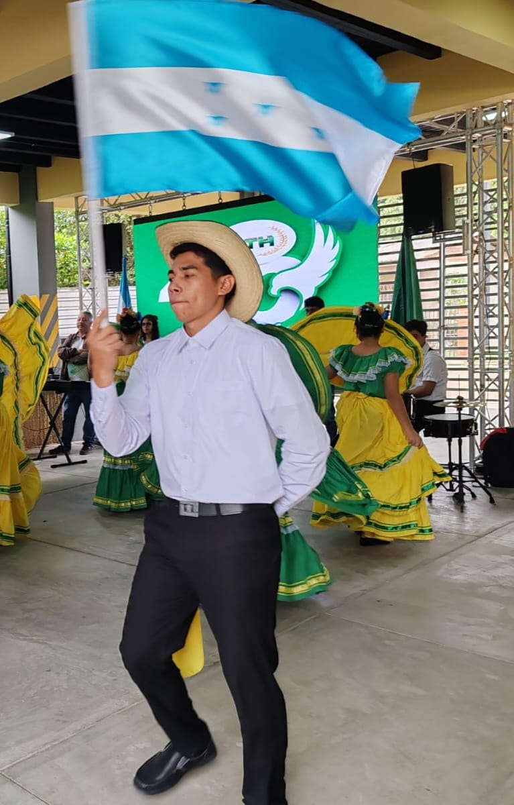
19 años · Bailarín
Ing. en Mecatrónica
“Que sepan que en Villanueva se baila con orgullo, sabor y dulzura para Honduras y el mundo”
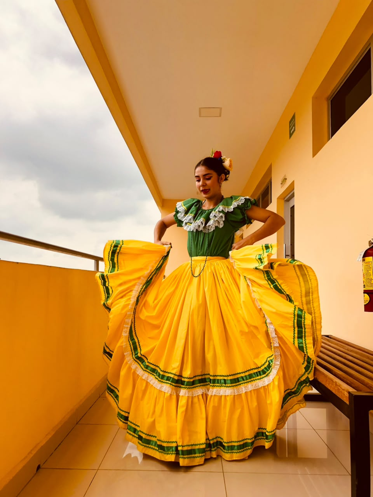
21 años · Bailarina
Licenciatura en Marketing
“Y como se baila en mi tierra comadre”
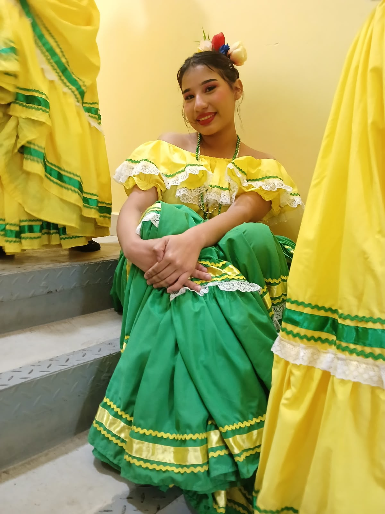
19 años · Bailarina
Comercio y Negocios Internacionales
“Unidos por el ritmo, la danza y la misma pasión”
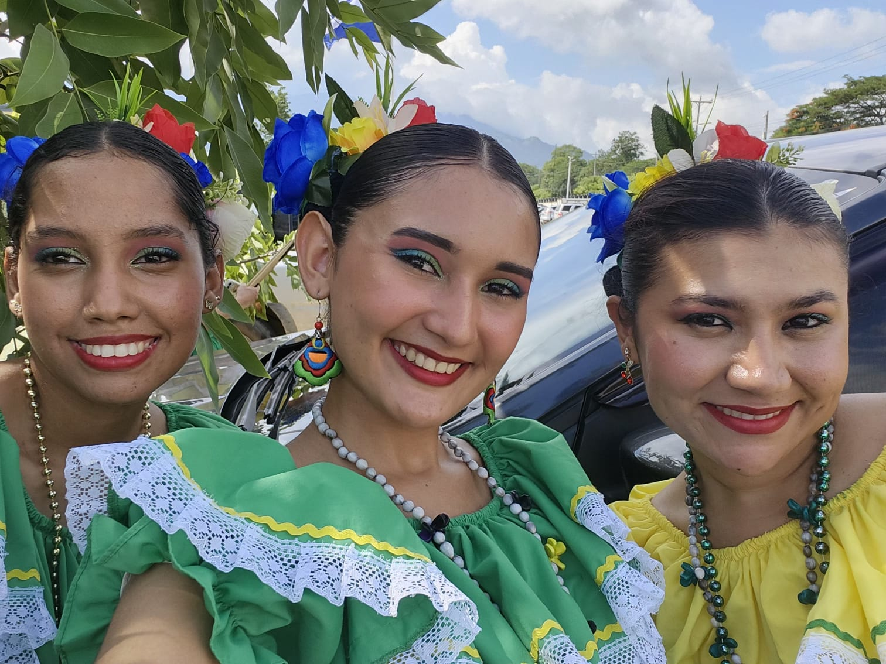
19 años · Bailarina
Comercio y Negocios Internacionales
“Soy raíces, tradición y orgullo hondureño”
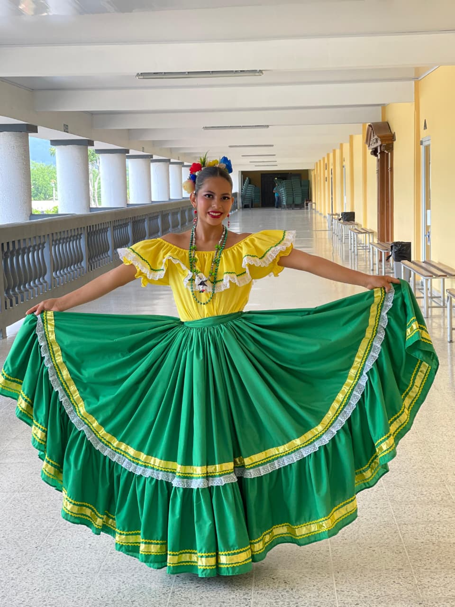
19 años · Bailarina
Ing. en Sistemas
“Sueña con los pies, danza con el corazón”
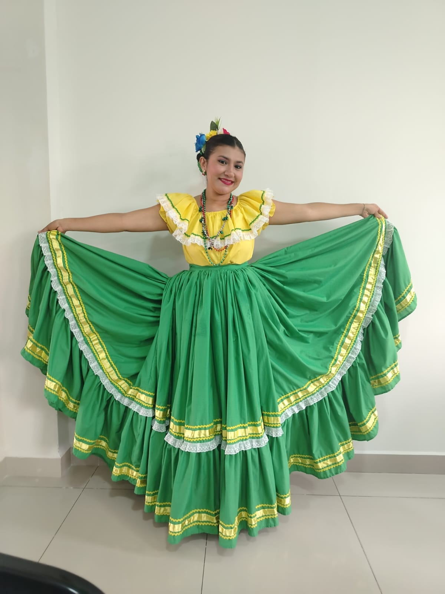
29 años · Bailarina
Gerencia de Negocios
“Baila bonito, sueña en grande”
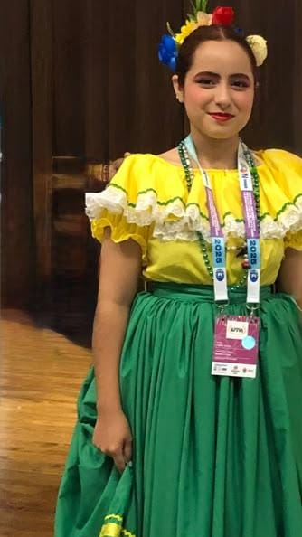
19 años · Bailarina
Informática Administrativa
“No le haga caso a ese indio curtido comadre”
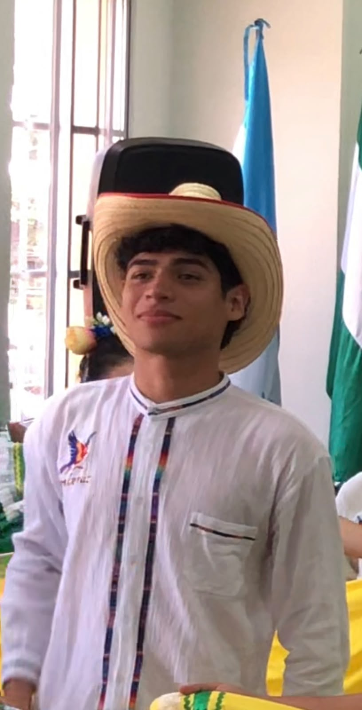
19 años · Bailarín
Técnico en Redes Informáticas
“Brilla, y al que se moleste que se tape los ojos”
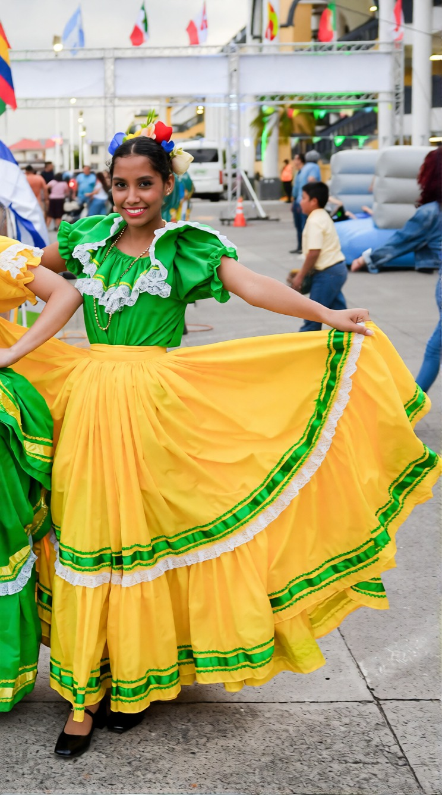
17 años · Bailarina
Licenciatura en Recursos Humanos
“Porque nuestras raíces también tienen ritmo”
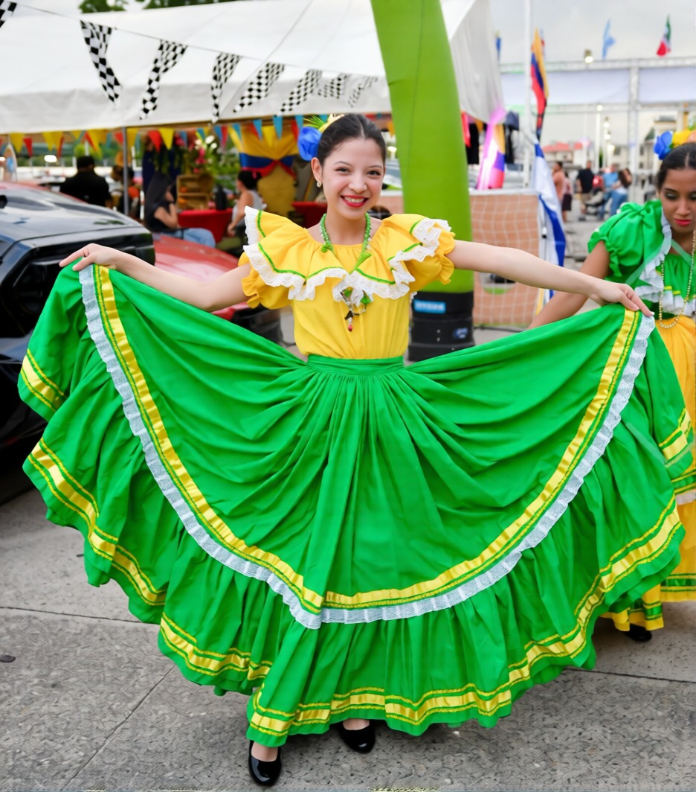
20 años · Bailarina
Licenciatura en Comercio y Negocios Internacionales
“Un año de espera, un instante de gloria: así vive nuestro folclore”
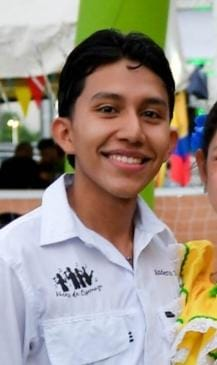
21 años · Bailarín
Licenciatura en Gerencia de Negocios
“¡Ta' chula mi vieja compadrito!”
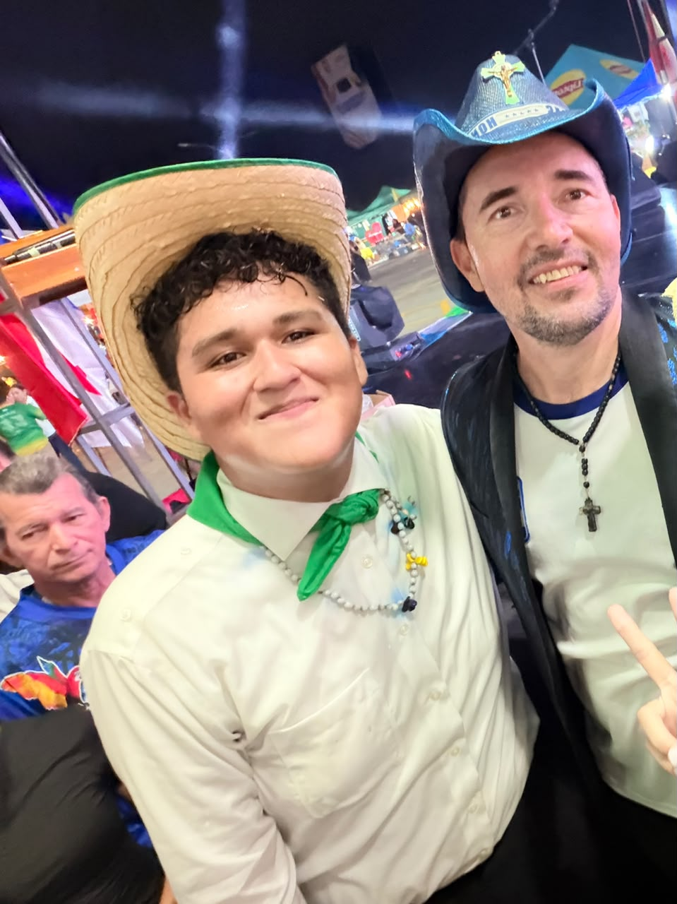
17 años · Bailarín
Licenciatura en Recursos Humanos
“El folklore se lleva en la sangre y se baila con el alma”
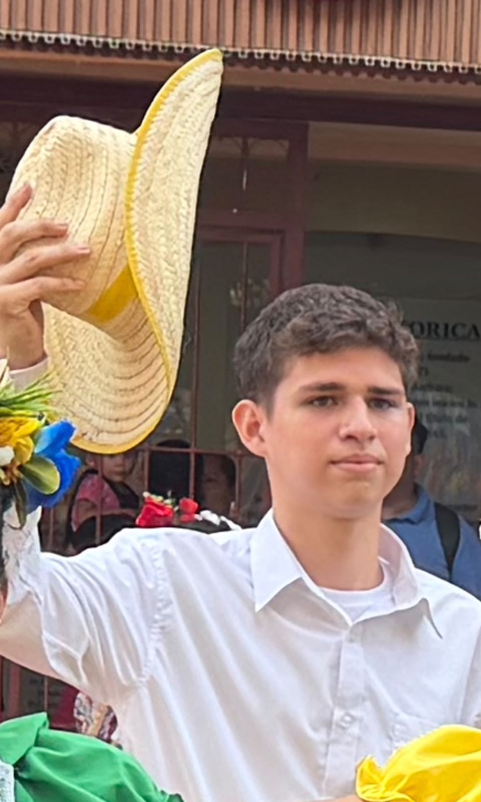
21 años · Bailarín
Ing. en Mecatrónica
“Te vi volar me enamoro tu bailar tu sonrrisa tan fugaz me alegra cada día más”
Toca cada punto del riel para ver la etapa. Empieza en el debut de julio 2025.
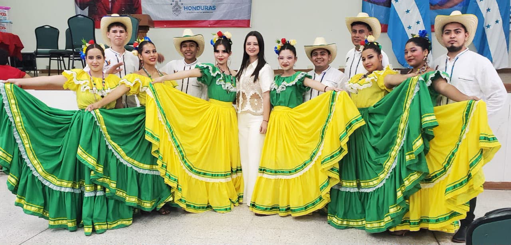
Toca una foto para ampliarla. Orden cronológico.
Acompaña al grupo en sus redes sociales.